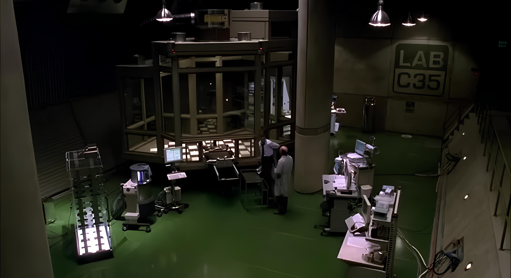
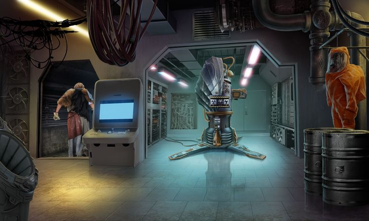

Galeria
Registros das instalações e projetos em desenvolvimento



Décadas redefinindo os limites da ciência em benefício da humanidade
Norman Osborn assume o controle total da empresa após expor seu sócio Mendel Stromm por suposto desvio de fundos, tornando-se o único dono da Oscorp Industries.
A Oscorp firma os primeiros contratos com o Departamento de Defesa dos EUA, fornecendo armamentos químicos, exoesqueletos de combate e os primeiros protótipos dos Spider-Slayers.
Lançamento do programa secreto de aprimoramento genético humano. O Composto OZ é isolado pela primeira vez no laboratório de bioengenharia da torre central.
Norman Osborn injeta em si mesmo uma versão instável do Soro Goblin, desencadeando alterações físicas e neurológicas irreversíveis que mudarão a história de Nova York.
Projetos em operação nas instalações da Oscorp Industries em Nova York
Fórmula mutagênica de origem desconhecida capaz de reescrever o DNA humano. Responsável pela criação do espécime aracnídeo que alteraria o destino de Peter Parker.
Ver RelatórioRobôs de combate autônomos desenvolvidos para rastrear e neutralizar alvos com reflexos sobre-humanos. Projeto encomendado originalmente pelo J. Jonah Jameson.
Ver RelatórioComposto químico baseado nos estudos de Stromm que concede força e resistência sobre-humanas ao portador. Efeitos colaterais psicológicos ainda não controlados.
Ver RelatórioVeículo aerodinâmico em forma de asa-delta com propulsão turbo e sistema de armamento integrado. Protótipo criado para uso exclusivo do Duende Verde.
Ver RelatórioDispositivos de fragmentação nanotecnológica com carcaça termocrômica desenvolvidos no laboratório de armamentos especiais. Lote atual: 480 unidades operacionais.
Ver RelatórioArmadura de voo antigravitacional desenvolvida em parceria com Adrian Toomes. Capacidade de altitude: 12.000 metros. Situação contratual: em litígio.
Ver RelatórioRegistros das instalações e projetos em desenvolvimento


Estudo de organismos alienígenas de origem desconhecida com capacidade de fusão simbiótica com o hospedeiro humano. Amostras coletadas por Norman Osborn durante missão classificada.
78% CONCLUÍDOTecnologia de replicação genética humana para criação de clones funcionais com memórias implantadas. Baseado nos estudos do Dr. Miles Warren - codinome: Chacal.
45% CONCLUÍDODistribuição em massa do Soro Goblin para criação de uma força paramilitar com capacidades sobre-humanas sob controle direto de Norman Osborn.
32% CONCLUÍDO